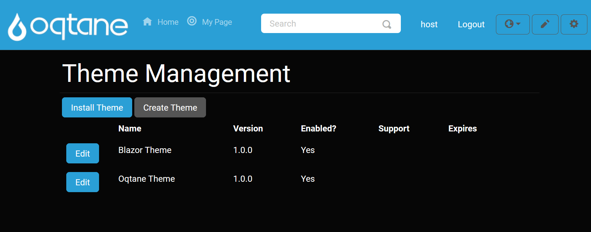

Theme Management
The theme page is not used that often. Generally, it's used during the development of a new site and sometimes is used during the rollout of a new site brand. It allows you to view the available themes and containers that have been installed in your site and then applied as the default for new and existing pages and modules.
Themes on Oqtane provide a multitude of different colors and styles for pages to be presented in. These themes can provide unique looking pages and websites as a whole. There are two default themes for Oqtane, the Blazor theme and the Oqtane theme.
You can also download new themes to use by clicking the install theme button at the top of the page and choosing some themes to download, so you change the look of your site. There is also an upload tab which allows you to put Nuget files for themes that are not available in the download menu onto your Oqtane framework.
